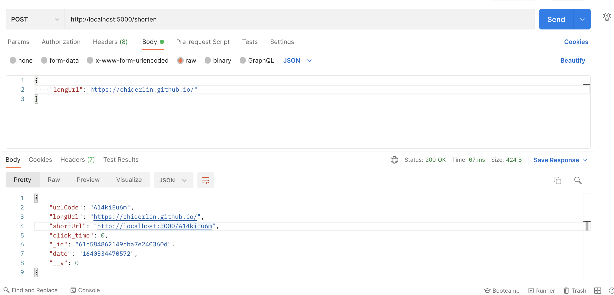

前言
公司有做短網址的東西，雖然目前的工作範圍還沒有接觸到，但因為好奇就想先來了解一下原理～之後也想搭配redis玩一下，但今天先單純記錄一下如何做出短網址。這次的實作是api的部分，沒有前端畫面～
使用Nodejs + MongoDB
成果圖
是製作短網址沒錯，但我用的網址本來就很短所以感覺不出來哈哈哈

正文
原理
- 使用者輸入他想縮短的網址
- 傳送到後端，後端check資料庫是否有過記錄
- yes, 返回以前紀錄的短網址回傳
- No, 創新的短網址，寫入db，返回短網址到前端
短網址怎麼和原本的網址連結？
當使用者點擊短網址時，等於是像後端發送請求，短網址會像這樣localhost:3000/shorten_url
(shorten_url是你的短網址)
當後端接收到shorten_url的參數時會去資料庫驗證是否有此短網址
- no, 查無此筆網址資料，返回前端
- yes, 資料庫返回原本長網址的資料，使用redirect將使用者導到原本網址的地方
為什麼需要短網址？
- 複製時更迅速＆避免錯誤(第一點放最直觀的原因)
- 短網址能做到部分網域自訂名稱，讓使用者取得自有風格的短網址
- 用短網址來追蹤多少點擊
短網址面臨的挑戰
資安的問題，唯一也是最嚴重的問題，會被惡意應用在轉址到詐騙網站或病毒網站。
可能可以使用的策略
- 建立登入系統，讓使用者至少要是登入的狀態才能使用短網址服務，當成第一道簡單的防線。若短網址被惡意使用便可得知是哪個使用者，再予以停權。
- 更上層的防止：
- 建立白名單，要使用短網址功能的使用者要申請，審核通過才可以使用。怎麼審核？…..人工審核（笑。
- 建立黑名單：就是第一點停權的部分。（白名單的反邊，可能變成要看一下哪邊的人數比較多就建立哪個名單ＸＤ….）
簡易版實作
會用到的方便又好用的套件：
npm i valid-url：check要轉換的urlnpm i shortid： 產生隨機亂數
以上兩者要自己寫也可以～
架構:
1
2
3
4
5
6
7
8
9
10
11
| shorten-URL
|-controller
|- create_url.js
|- redirect.js
|-model
|- url.js
|-route
|-url.router.js
|-db.config.js
|-index.js
|
—-開始—-
先來設定資料庫的連線
db.config.js
1
2
3
4
| const mongoose = require('mongoose');
mongoose.connect(process.env.DB_URL, { useNewUrlParser:true, useUnifiedTopology:true });
module.exports = mongoose.connection
|
mongodb來設定一下模組
model/url.js
1
2
3
4
5
6
7
8
9
10
11
| const mongoose = require('mongoose')
const schema = new mongoose.Schema({
urlCode: String,
longUrl: String,
shortUrl: String,
click_time: { type: Number, default: 0 },
date: { type: String, default: Date.now }
});
module.exports = mongoose.model('url', schema)
|
再來可以寫產生短網址的部分
controller/create_url.js
1
2
3
4
5
6
7
8
9
10
11
12
13
14
15
16
17
18
19
20
21
22
23
24
25
26
27
28
29
| const validUrl = require('valid-url');
const shortid = require('shortid');
const Url = require('../model/url');
const baseUrl = 'http://localhost:5000';
module.exports = async(req,res)=>{
const { longUrl } = req.body;
if(!validUrl.isUri(longUrl)) {
return res.status(401).json('Invalid longUrl')
}
const urlCode = await shortid.generate();
try {
let url = await url.findOne({ longUrl }).lean().exec()
if(!url){
const shortUrl = baseUrl + '/' + urlCode;
url = new Url({
longUrl,
shortUrl,
urlCode
})
await url.save()
}
return res.json(url)
} catch(e){
res.status(500).json({ status:'server error' })
}
}
|
如何讓短網址連到原本的網站
controller/redirect.js
1
2
3
4
5
6
7
8
9
10
11
12
| const Url = require('../model/url');
module.exports = async(req,res) => {
try {
const urlCode = req.params.code;
const url = await Url.findOne({ urlCode }).lean().exec()
if(!url) return res.status(404).json({ 'No URL Found' })
await Url.updateOne({ urlCode },{ click_time: url.click_time+1 })
return res.redirect(url.longUrl)
} catch(e) {
res.status(500).json('Server error')
}
}
|
來串api路徑～
1
2
3
4
5
6
7
8
9
| const express = require('express');
const router = express.Router();
const createUrl = require('../controller/create_url');
const redirct = require('../controller/redirect');
router.post('/shorten', createUrl)
router.get('/:code', redirect)
module.exports = router
|
最後，程式的入口要串起來
index.js
1
2
3
4
5
6
7
8
9
10
11
12
13
14
15
16
17
18
| const express = require('express');
const app = express();
const PORT = process.env.PORT || 5000;
require('dotenv/config');
const connection = require('./db.config');
connection.once('open',()=> console.log('DB Connected'))
connection.on('error',()=> console.log('Error'))
app.use(express.json({
extended: false
}))
app.use('/', require('./route/url.router'))
app.get('*',(req,res)=>{
return res.status(404).json({ msg: 'not found', status: 404})
})
app.listen(PORT,()=> console.log('server start'));
|
心得
差不多就是這樣了，好像沒有太多需要備註的地方，最重要就是controller的部分，實作之後了解核心原理，但說到全方面提供一個好服務的話，這篇記錄就真的很入門，菜鳥工程師繼續學習～
參考來源：
How to Build a Custom URL Shortener using Node.js, Express, and MongoDB
教你怎麼實現縮短網址功能
我的短網址產生器實作歷程
Google為何要終止goo.gl？短網址出了什麼問題
Author:
Chi Lin
Permalink:
https://chiderlin.github.io/2021/12/21/shorten-url-redis/
License:
Copyright (c) 2019 CC-BY-NC-4.0 LICENSE
Slogan:
Do you believe in DESTINY?